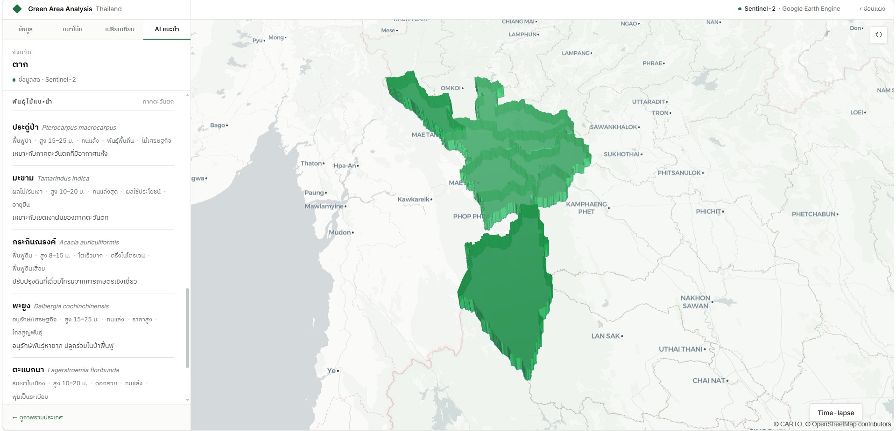

ความสามารถ · Capabilities
เครื่องมือครบสำหรับงานผังเมืองเชิงข้อมูล
Six instruments, one evidence base.
01
สถิติเชิงพื้นที่Spatial statistics
NDVI · LST · พื้นที่สีเขียวต่อหัวเทียบเกณฑ์ WHO ระดับจังหวัดถึงอำเภอ พร้อมกราฟรายเดือน
02
แนวโน้ม + พยากรณ์Trends & forecast
ดูย้อนหลังหลายปี พร้อมพยากรณ์ล่วงหน้า 3 ปี ด้วย OLS regression และช่วงเชื่อมั่น 95%
03
เทียบภาพดาวเทียมSatellite compare
เลื่อนเทียบภาพสองปีแบบ swipe หรือดูแผนที่ผลต่าง (Δ) จุดที่เขียวขึ้น/หายไป
04
ผลความเย็นCooling effect
Regression ของ LST ต่อ NDVI ระดับอำเภอ พิสูจน์ว่า “ยิ่งเขียว ยิ่งเย็น”
05
AI แนะนำจุดปลูกAI recommendation
Heatmap จัดลำดับพื้นที่ที่ควรปลูก ถ่วงน้ำหนักการขาดสีเขียว ความร้อน ประชากร พร้อมพันธุ์ไม้รายภาค
06
รายงาน + แชร์Reports & sharing
ส่งออก PDF/CSV พร้อมแผนที่และพิกัด และลิงก์ที่จำจังหวัด อำเภอ และแท็บที่เปิด
หลักฐานเชิงพื้นที่ · Evidence
ทุกตัวเลขสืบกลับไปถึงพิกเซลดาวเทียม
ประมวลผลบน Google Earth Engine จากภาพถ่ายดาวเทียมเปิด เผยแพร่ ตรวจสอบย้อนกลับได้ พร้อมเปิดเผยความครอบคลุมข้อมูลทุกปี
9 m²
เกณฑ์ WHO ต่อประชากร
62/77
จังหวัดที่มีข้อมูลปีล่าสุด
2
ดาวเทียม — Sentinel-2 · Landsat
3
ปีพยากรณ์ล่วงหน้า (OLS)

พร้อมวางแผนพื้นที่สีเขียว
ด้วยข้อมูลจริงแล้วหรือยัง
เปิดให้หน่วยงานและสาธารณะใช้งานโดยไม่มีค่าใช้จ่าย
เริ่มใช้งานแดชบอร์ด →